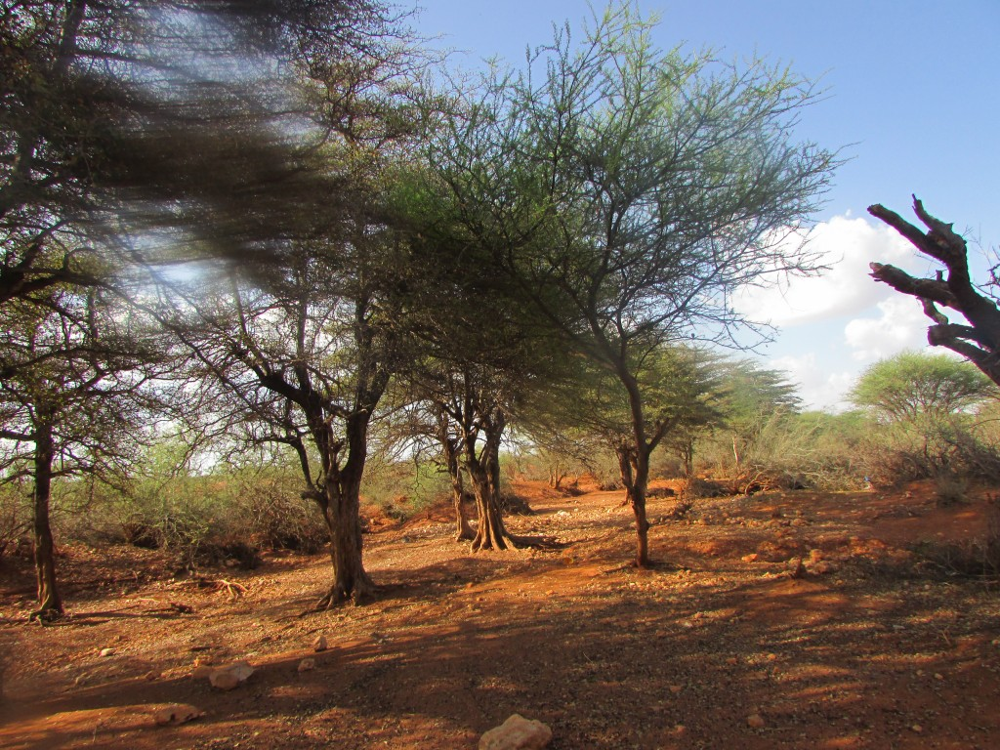

October 11, 2026
The Referee
A short story

It is five o'clock on a Friday in April, and the sky over Weston Road has gone the colour of old dishwater. Work at the office never finishes, eh. After an hour and a half on two buses and the subway, I eat my usual spaghetti standing at the counter, which my mother would never forgive, and I make coffee.
It is Khatumo Coffee, which is to say ordinary Ethiopian beans that my cousin Faysal roasts with cardamom and a little ginger in the back of his grocery, and sells in brown paper bags stamped with the Khatumo flag for twice what they are worth. I pay it. Everybody pays it. That is how patriotism works in Toronto.
I make sure I have a good grip on the cup before collapsing onto the sofa. My phone buzzes on the armrest. WhatsApp, from Adeer Jaamac in Taleh.
Wiilkayga, the conference is coming. Your uncles are carrying a heavy load. Send what Allah makes easy.
I turn the phone face down. One glance at the television and it is Chelsea versus Arsenal.
"There is something oddly different about this ball game," I say to nobody, and take larger and faster sips.
Because suddenly it is not two teams but three, and the grass is gone. The pitch is the hard red plain outside Taleh, the old Dervish fort watching from the ridge, and running out onto it are the teams of Khatumo State. The Traditional team has thirteen members in white macawiis and turbans, and they walk rather than run, out of dignity or out of knees. The Presidential team has only three, in matching numbered shirts. The Executive Council, which everyone calls the G11, plays in suits that were bought for someone slightly thinner. It has eleven members, like a proper football side, which is the only proper thing about it.
There is no referee. There are no goal posts. Nobody seems to notice. Each team kicks the ball towards wherever it imagines the goal to be: up, down, left, right, loops, free kicks. It is open season.
And still the crowd of Khatumites, thousands of us packed into stands that were not there a minute ago, roars every time the ball moves beautifully.
But as the game goes on, a ball now and then strikes a player below the belt.
"Stop the game!" yells a man in the third row. "My uncle on team Presidential has been hit. You know. Down there. That is a foul. A penalty is due!"
"And what about my man on team Traditional?" yells another from the second row. "In the first half he passed the ball East, and everybody jumped on him!"
Meanwhile the G11, burdened by a sense of responsibility, keeps kicking the ball in every direction except East or West.
"So all this time," says a voice behind me, "the fans have been refereeing."
It is a woman's voice. It is old and young at once, the way a grandmother sounds when she is telling a story she has told a hundred times and is still enjoying. There is a smell of frankincense, which is impossible, because I live in a basement apartment in Toronto and the landlord has a rule.
I start to turn around.
"Watch the game," she says.
I watch the game.
"There has to be a referee," she says. "Somebody to refer to when you are fighting, or lost. By the way. Are women allowed to play?"
"Yes," I say. "A few posts. Catching a stray ball here and there, you know."
"So we are watching a political game among a few individuals whose common qualifications are that they are men, and old."
"I would not be so unkind," I say. "But yes. Kind of."
"And the one in the number 5 shirt?"
"That is my uncle," I say, with pride. The phone is warm against my leg. "He defends and leads that team so well. Geesi laba xiniinyood ah. A brave man with two balls."
She laughs, but only a little, the way you laugh at a child who has used a bad word correctly.
"And that is how you measure a leader?" she asks. "By the balls?"
"How else?"
"By the people's right to gather in their own town," she says. "To argue about their own affairs. That should be sacred. No rational man would break up such a gathering."
And that is when the stadium goes quiet.
Not quieter. Quiet. The ball stops. The men stop. The whole crowd sits frozen with its mouth open and no sound coming out, and from the East end of the plain, from the Lasanod road, a line of women is walking towards the pitch.
I know some of them. Not by name, but the way you know your aunts' friends. Last year, at Khatumo II, these same women came carrying flowers, and the flowers were accepted, and somebody made a speech about the mothers of the nation, and there were photographs.
This year they are carrying flowers again. This year there are men at a barrier with sticks.
I watch the flowers go into the dust. I watch a woman in a green garbasaar go down on one knee, and get up, and pick up a single stem, and hold on to it the whole time they are pushing her back down the road.
"The people of Khatumo never changed their allegiance," the voice behind me says, into the silence. "So what changed?"
I have nothing. When the sound comes back, somebody on the field is already moving the ball beautifully in no direction, and the crowd, God forgive us, is cheering.
"You want to know what this whole paralysis is about?" she says. "He said this about you. He said that about you. A little gossip carried by a third man for his own reasons. If I made a joke and it offended you, would you go to war over it?"
"Maybe not," I say. "If it were up to me. But you never insult just one man. You insult his whole sub-clan, and every one of them is owed damages, by way of generalization."
I say this very reasonably. She lets me hear myself say it.
"Most wars are over land, or water, or oil," she says. "There is no land in dispute between these men. The administrations to the east and to the west have already swallowed the land, except Buhodle, where the fire is too hot to put out. What is in dispute is who bad-mouthed whom. And for that, the fate of nearly a million people sits in a waiting room while a few old men play who blinks first, happy to go to their graves with a Khatumo they never owned."
"Then who owns it?"
"Ask who funds it."
The phone buzzes again against my leg. I do not look at it. I do not need to.
"These are normal stages," I say, reaching for the comfort of my foreign training. "Every group goes through them. Forming, storming, norming. Khatumo has formed. Khatumo has stormed. Come Khatumo III, we will be performing."
"You have a name for every stage," she says, "except the one you are standing in."
I do not enjoy how accurate that is.
Here is the truth, since she has started it and it seems rude to stop. One by one, we Khatumo folks do fine. Some of us own trucking companies in Minneapolis and shopping plazas in Nairobi. Some of us have degrees from places our grandmothers cannot pronounce. And yet together we fail at things far smaller than ourselves. I have a Canadian degree in public policy, and I have never once used it to put bread on a table in Taleh, or to cure a single disease our people have been dying of for fifty years, or to help build a government led by a man with moral authority.
"You are only as strong as your weakest link," she says. "Yes?"
"What weakest link?"
"In Khatumo country, thousands of people have no clean water, no clinic, not enough to eat. Add old men bickering, and life becomes unbearable. You do not count a leader's strength in tanks paraded down the road. Count it in clinics. Count it in the people who trust him.
"A real leader asks why the doctor that WHO supposedly sent to Taleh has not been seen in two years. Why the FM radio transmitter sent from Mogadishu has never once been switched on. That is something worth flexing a Presidential muscle over. Not a title. A title is something men made up and then decided God gave them. It has never dug a single well."
"But the children," I say, because for once I want to be the one with the hopeful line. "Let the cities of the east and the west send bigger guns. When the kids in Kalabaydh and Kalshaale paint the Khatumo kalimah on their school walls, the enemy's days are numbered. Nothing defeats a modern Dervish."
I say it the way we say it at weddings in Etobicoke, loudly, leaving room for applause. None comes. Down on the field a boy of maybe ten has wandered onto the pitch with a can of paint, and he is painting something on the red earth where a goal post ought to be, and two men from the G11 are trying to take the can away from him.
"Then let those children imagine women in the room," she says. "Is there one woman on the Traditional team?"
"Well. Ahh." I hesitate. "In Khatumo we keep things the old way. We respect the elders."
"I will give my respects," she says, "when Queen Elizabeth of England starts dictating policy to her Parliament and her Prime Minister."
Below us the three teams jog out again. Thirteen, three and eleven. Odd numbers, every one of them, and no way to make them add up to a match. Same pitch. Same absence of goal posts.
"These leaders disappoint me," she says. "The more these men play, the less Khatumo there will be. Unless there is an alternative."
"What alternative?"
"An Arrawello, perhaps."
Every Somali boy grows up with one bedtime threat. Behave, or Arrawello will come for what makes you a man.
And I turn around, finally, and look at her properly, and understand who has been sitting behind me for the whole of the second half.
Without meaning to, I cross my legs.
She is not what the stories say. There is nothing hanging from her belt. She is a tall woman in a plain dirac with dust up to the knees, and she has the face of every aunt who ever ran a household through a drought and was thanked for none of it.
"For a thousand years your grandfathers have told one story about me," she says. "It is always the same story, and it is always about what I took from men. Not one of them tells the other half. That the wells were dug. That the roads were safe. That disputes were settled, quickly, and by somebody. They remember the punishment. They forget the administration."
I have no answer, and she does not seem to need one.
"Then who," I ask, "would you have referee the next game?" And already I am wondering whether the right question is what his name would be, or hers.
"It is not even a person," she says. "You fool. And relax. I only ever took from men who would not govern."
"Then what?"
"A constitution. Written down, and read, and turned to whenever you are in doubt or in a fight. Written with the civil society you keep forgetting to invite. And for the first article, you might start with this: Khatumo belongs to neither the administration in the east nor the one in the west."
Then the stadium is gone.
The sofa is still there, and the television, and Chelsea are a goal up with twenty minutes to play. My Khatumo Coffee has gone cold in my hand, and eleven men in blue are moving the ball beautifully towards a goal that is exactly where they left it.
The phone has lit up again on the armrest. Adeer Jaamac.
Are you there, wiilkayga?
I am. I sit for a long time with my thumb over the screen, trying to work out what, exactly, I would be paying for.
An earlier version of this story, Lady Khatumo Wins the Final Battle of the Ball, appeared on khatumo.net in April 2014.
Responses
Corrections, counter-arguments and first-hand accounts are welcome. Comments are read before they appear.